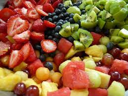
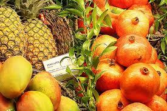

Facts
50 facts about fruits

These are some facts about fruits
- A strawberry is not an actual berry, but a banana is.
- Bananas are naturally slightly radioactive.
- Tomatoes are a fruit not a vegetable.
- A kiwi has two times the vitamin C present in an orange.
- A pomegranate can hold up to 1400 seeds.
- Apples are 25% air which is why, when placed in water, they float.
- Cranberries can bounce.
- Cucumbers are fruits.
- Not all oranges are orange.
- The heaviest watermelon ever recorded weighed a whopping 350.5 pounds (158.8 kilograms).
- In the grand fruit history, oranges were once considered luxury items.
- Square watermelons are popular in Japan.
- Grapes Explode in the Microwave.
- Coconuts, peaches, and pineapples are all considered to be berries.
- At one point in time, blackberry juice was used to dye clothes.
- Coffee beans aren’t really beans at all. Instead, they’re actually fruit pits.
- Humans and bananas have 50% of the same DNA.
- The stickers placed on fruits are made out of edible paper, meaning that they are, technically, able to be consumed.
- The Durian fruit is the world’s worst smelling fruit.
- Kiwis, at one time, were known as Chinese Gooseberries.
- Plums, pears, peaches, and apples are all apart of the Rose Family.
- A mango tree can grow to be 100 feet tall.
- In the U.S., tomatoes are legally named vegetables.
- 7,500 varieties of apples are grown worldwide.
- Some nutritionists call guavas a “super fruit.” Others under this title include apples, bananas, grapefruit, citrus fruits, and cantaloupe.
- Rhubarb leaves are actually very toxic
- Some nutritionists call guavas a “super fruit.” Others under this title include apples, bananas, grapefruit, citrus fruits, and cantaloupe.
- There are over 1,000 different kinds of apples and none of them are native to America. Actually, they’re said to have originated from Kazakhstan.
- Strawberries are the only fruit in the world that grow seeds on the outside and they’re related to the rose family.
- Many years ago, explorers used hollowed out watermelons to carry water onboard their ships.
- Bananas don’t grow on trees. They grow on plants that are as big as trees (they’re usually over 30 feet tall).
- To ensure that a pineapple becomes ripe faster than usual, place it down with the leaf-covered end facing the ground.
- Avocado leaves can prove fatal to various types of birds.
- The loganberry is a mix of blackberries and raspberries.
- The seeds inside of the lychee fruit are poisonous.
- Cherries are said to help calm one’s nervous system.
- Blueberries were, at point, called star berries.
- Consuming passion fruit might help with falling asleep and lowering anxiety levels.
- When put in a bowl with bananas, pears will ripen faster than normal.
- The mangosteen is known as the “queen of fruits.”
- Nectarines can be a pale white color, instead of their typical yellow, on the inside.
- The Asian Pear is sometimes referred to as a Nashi.
- Rhubarb leaves are actually very toxic.
- Some oranges-mainly those grown in tropical areas of land-are green and/or yellow in color.
- Bananas, like apples and watermelons, can float.
- A true berry is a fleshy fruit formed from the ovary of a single flower, with a seed or seeds embedded on the inside of the flesh.
- An average sized pomegranate can contain anywhere between 200 to 1400 seeds!
- Cranberries can bounce.
When they are ripe, they bounce.
- Many of us will have known that a tomato is a fruit,it's ture.
- From a botanist's perspective, it is classed as a fruit because it's a product of the seed-bearing structure of flowering plants.

this facts are frome this websites check them out
gourmetgiftbaskets
brighthorizons
Hawk eye